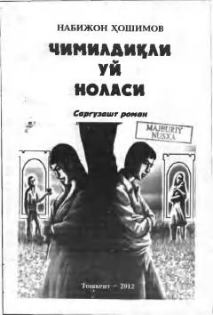

CUPokiza muhabbat va og'ir sinovlarga uchragan yoshlarning taqdiri haqidagi ta'sirli roman.
Mazkur roman bir-biriga ahdu paymon qilgan, biroq baxtli turmush qurishdan benasib bo'lgan ikki sevishgan yoshning pokiza muhabbati, qalb iztirooblari hamda ayanchli taqdirlari haqidadir. Ota-onalar va qarindoshlarning aralashuvi tufayli og'ir sinovlarga duch kelgan qahramonlarning hayoti, qiyinchiliklar va sadoqat real voqealar asosida bayon etilgan.